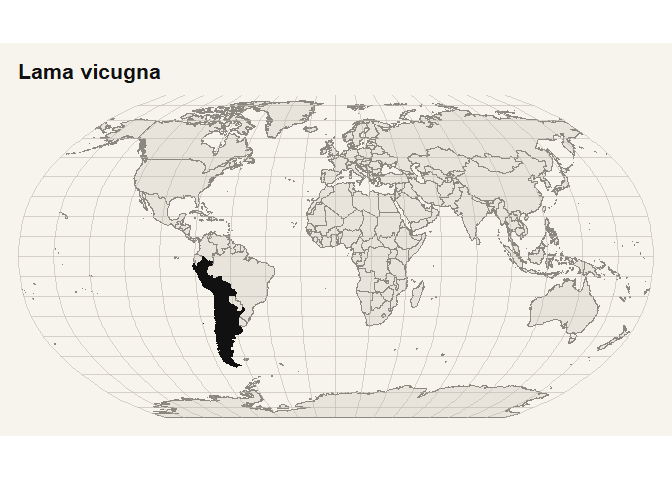

rmdd provides packaged Mammal Diversity Database (MDD) data for R and a practical workflow for mammal name reconciliation, accepted-name retrieval, distribution summaries, and distribution maps. It is designed for analysts who need a local, reproducible interface to the current MDD release.
Installation
install.packages("rmdd")Development version:
# install.packages("pak")
pak::pak("PaulESantos/rmdd")What is included
rmdd ships three lazily loaded datasets:
| Dataset | Rows | Purpose |
|---|---|---|
mdd_checklist |
6,871 | Current accepted species checklist with taxonomy, status, and distribution fields |
mdd_synonyms |
64,683+ | Synonym table linking historical and alternate names to accepted species |
mdd_type_specimen_metadata |
138 | Collection-level metadata for type specimen institutions cited in MDD |
Quick start
library(rmdd)
library(dplyr)
#>
#> Adjuntando el paquete: 'dplyr'
#> The following objects are masked from 'package:stats':
#>
#> filter, lag
#> The following objects are masked from 'package:base':
#>
#> intersect, setdiff, setequal, union
mdd_matching(c("Puma concolor", "Felis concolor", "Pumma concolor")) |>
select(input_name, matched_name, taxon_status, accepted_name, match_stage)
#> # A tibble: 3 × 5
#> input_name matched_name taxon_status accepted_name match_stage
#> <chr> <chr> <chr> <chr> <chr>
#> 1 Puma concolor Puma concolor accepted Puma concolor direct_match
#> 2 Felis concolor Felis concolor synonym Puma concolor direct_match
#> 3 Pumma concolor Puma concolor accepted Puma concolor direct_match_species…
mdd_taxon_record("Vicugna vicugna")$taxon_tbl |>
select(
sci_name,
original_name_combination,
country_distribution,
iucn_status
)
#> # A tibble: 1 × 4
#> sci_name original_name_combination country_distribution iucn_status
#> <chr> <chr> <chr> <chr>
#> 1 Lama_vicugna Camellus Vicugna Peru|Bolivia|Chile|Argenti… LC (as Vic…
mdd_distribution_summary(level = "country") |>
arrange(desc(total_species)) |>
slice_head(n = 5)
#> # A tibble: 5 × 7
#> region orders families genera living_species extinct_species total_species
#> <chr> <int> <int> <int> <int> <int> <int>
#> 1 Indonesia 17 58 241 793 4 797
#> 2 Brazil 11 51 250 785 3 788
#> 3 China 12 56 259 746 0 746
#> 4 Mexico 12 45 205 585 4 589
#> 5 Peru 13 55 229 582 0 582
mdd_distribution_map("Lama vicugna", quiet = TRUE)
Site structure
The pkgdown site is organized around three entry points:
- Home: short package overview, installation, and a minimal workflow.
- Get started: a complete walkthrough from bundled datasets to name matching, taxon retrieval, and distribution mapping.
- Reference: function documentation grouped by data access, reconciliation, taxon retrieval, and distribution tasks.
For the full workflow, see the Get started article.
Citation
Use citation("rmdd") to cite the package and mdd_reference() to cite the bundled MDD release used by the package.
mdd_reference()
#>
#> ── MDD Citation ──
#>
#> Mammal Diversity Database. (2026). Mammal Diversity Database (Version 2.4)
#> [Data set]. Zenodo. https://doi.org/10.5281/zenodo.17033774
#> DOI: <https://doi.org/10.5281/zenodo.17033774>